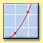

| Online Skills Activities | ||||
| Making
Measurements Learn the "language of data" and develop good measuring skills with conversion tables, practice problems, and common equivalents. |
||||
| Conducting
a Scientific Investigation Through virtual experiments, practice making observations and inferences, developing hypotheses, designing experiments, collecting and interpreting data, drawing conclusions, and communicating your results. |
||||
| Using
a Microscope Learn the parts of a microscope and the proper way to use one in the lab. |
||||
| Lab
Safety Primer Learn about the safety precautions in your Biology: Exploring Life Laboratory Manual and review proper disposal of materials. Then check your safety IQ. |
||||
| Math
Review Sharpen your math skills with tutorials and practice problems with fractions, percents, decimals, exponents, probability, significant figures, and formulas. |
||||
|  | Graphing Practice reading, interpreting, and making line, bar, and circle graphs. |
|||
| Organizing
Information Learn how to create graphic organizers such as concept maps, flowcharts, cycle diagrams, Venn diagrams, and tables. |
||||
| Studying
for Standardized Tests Review test question types and strategies for selecting correct answers and eliminating incorrect ones. Then practice your techniques on sample tests. |
||||
| Reading
a Scientific Article Get experience interpreting a scientific article. Sifting through the facts, posing questions, and considering potential bias will help you understand and critically evaluate information. |
||||
| Critical
Thinking for Web Research Find out how to select research topics and locate appropriate Web sites for information. Asking the right questions, using search engines, and evaluating the results will help you to harness the research power of the Web. |
||||